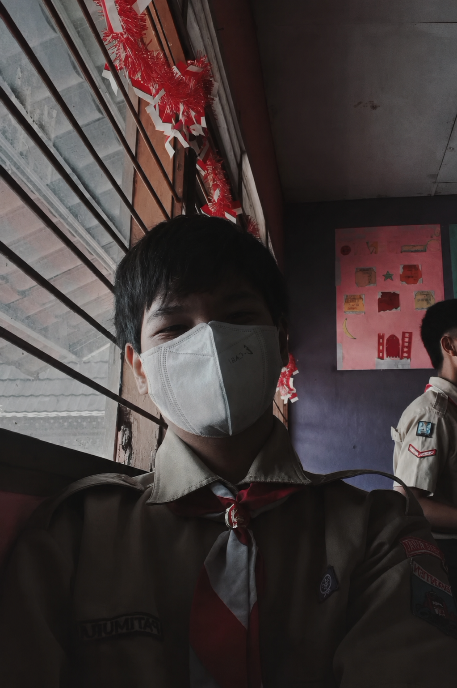

Seorang siswa yang memiliki minat mendalam di bidang teknologi informasi dan pengembangan perangkat lunak. Selalu aktif mengeksplorasi dunia pemrograman dan pembuatan karya digital yang kreatif.
Berfokus pada pengembangan web, penguasaan berbagai bahasa pemrograman, serta konsisten meningkatkan kemampuan diri melalui berbagai proyek praktikal di sekolah maupun mandiri.
Aktif dalam mengeksplorasi teknologi baru, merancang struktur antarmuka yang bersih, serta berkomitmen untuk menghasilkan karya digital yang fungsional dan berdampak positif.
Dayyan has more planned.
He is a proud member of SMK Negeri 6 Tangerang Selatan Student Association.
Menganalisis fenomena dan merumuskan opini melalui struktur teks Analytical Exposition. Proyek ini membedah tesis, argumen logis, dan fitur kebahasaan bahasa Inggris.
Introducing the topic and indicating the writer’s point of view to the readers clearly.
Explaining the argument to support the writer’s position. Elaborating logical points to strengthen the viewpoint.
Restating the writer’s point of view to strengthen the thesis and summarizing key arguments.
Materi dasar pembelajaran Bahasa Jerman tingkat pemula (A1.1). Membahas perkenalan diri, asal negara, domisili, dan tata bahasa esensial.
Memahami salam sapaan (Guten Tag, Hallo) dan ungkapan perkenalan nama menggunakan kalimat "Ich heiße...".
Menjelaskan negara asal dan kewarganegaraan menggunakan kata kerja kommen (contoh: "Ich komme aus Indonesien").
Menyebutkan tempat tinggal saat ini menggunakan kata kerja wohnen (contoh: "Ich wohne in Jakarta").
Penguasaan angka dasar (0-100) untuk menyebutkan usia ("Ich bin ... Jahre alt") dan nomor telepon sederhana.
Pembahasan integrasi harmonis antara ilmu pengetahuan, etika teknologi modern, dan nilai-nilai keimanan berbasis ajaran Islam.
Anjuran bagi jin dan manusia untuk menembus/menjelajahi penjuru langit dan bumi dengan kekuatan ilmu pengetahuan (sulthan).
Pentingnya menguasai ilmu sains dan teknologi sebagai wujud ibadah serta sarana mendekatkan diri kepada Sang Pencipta dan bermanfaat bagi alam semesta.
Memanfaatkan IPTEK untuk kemaslahatan bersama, menghindari penyebaran hoaks, serta mematuhi batasan etika syariat dalam dunia digital.
Analisis kritis dampak teknologi modern dan meneladani semangat penemu Muslim masa lalu (seperti Al-Khawarizmi) dalam memelopori sains.